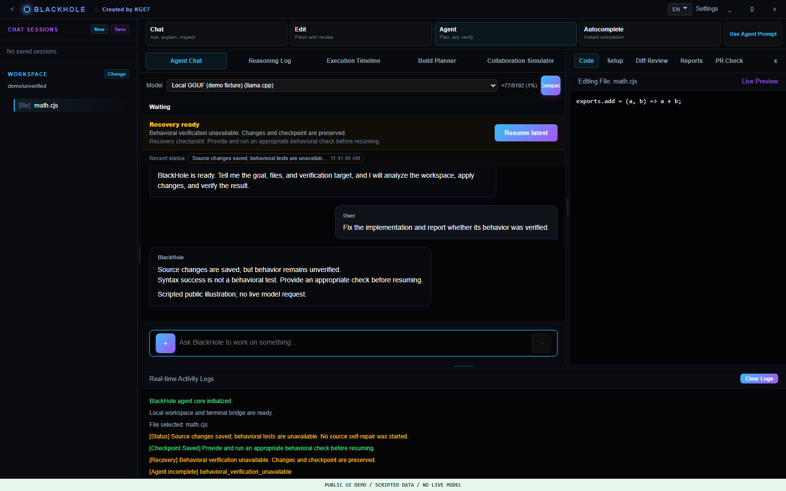

BlackHole
A tool-using coding agent,
starting with your local model.
Plan changes, edit files, and check their behavior.
Keep saved edits distinct from verified results and recoverable failures.

- Local inference
- llama.cpp + GGUF
- Development tools
- Files · terminal · web · MCP
- State and recovery
- Journal · checkpoints
WHAT IT DOES
Beyond an answer. A workflow.
BlackHole is not a model trained by this project. It connects your selected model to development tools.
Choose the model
Select a GGUF model and run local inference with llama.cpp. OpenAI-compatible gateways and OpenCode Go are available as optional providers.
Verify behavior
Keep the existing project test runner and loader. For supported source changes, missing, zero or all-skipped behavioral checks leave saved edits unverified; syntax success alone is not completion. Existing approvals remain in place.
Inspect progress
Review status, heartbeats, execution timelines and logs. Model-supplied reasoning is displayed in separate records rather than mixed into the chat answer.
Continue after interruption
Record checkpoints and an execution journal, manage context budgets, and explicitly resume from an available recovery point after addressing the failure.
Bound cached workspaces
Retain four recently used context engines with weak sharing for active callers. Unused indexes can be collected without clearing an active scan. This is not a total-RAM quota.
WALK THROUGH THE WORKFLOW
What happens after a request?
These scenarios inject scripted events into the real frontend. They are not model success-rate benchmarks.
Define the scope.
Change the implementation.
Fix math.cjs, cart.cjs and label.cjs. Keep the tests and package.json unchanged, then verify the result.
- Inspect the implementation, tests and scope
- Edit the three implementation files
- Run the existing tests
- Explain the changes and results
The included hand-authored before/after fixture fails three tests before the changes and passes all three afterward. Actual model-assisted resolution must be tested separately.

Inspect the process,
not just the answer.
Distinguish planning, execution, verification and recovery. Review the evidence behind a reported result.
- Execution states and event order
- Verification results and exit codes
- Changed files and checkpoints
A status message or model claim is not independent proof that tests passed.

Understand the failure.
Resume from a checkpoint.
- Inspect the cause and any partial output
- Check the available checkpoint
- Address authentication, limits or setup
- Resume and verify the resulting files
Automatic recovery from every error and exactly-once external execution are not guaranteed.


Saved is not the same
as behaviorally verified.
A syntax check can pass while code is wrong. If no applicable behavioral check runs, source changes remain saved with an incomplete, unverified outcome.
- Inspect the verification reason
- Supply an appropriate existing behavioral check
- Resume the checkpoint and verify again
The application does not automatically invent tests or create unrelated files to claim success. Passing assertions still do not prove every requirement.
Workflow GIF: planning → editing → verification

Static frames encoded in sequence, not a recording of execution time or model response speed.
HOW IT FITS TOGETHER
Connect models, tools and task state.
The React/Electron interface connects to an agent core that coordinates model calls, tool execution, verification and recovery.

Local inference is separate from external communication. Web tools, MCP services and cloud providers can make external requests.
VERSIONED EVIDENCE
Measured scope, not blanket promises.
Maintainer executable tests and independently rerun public-source checks are separate records. The UI illustrations above are not these measurements.
- Build 31 checks
- Backend 507 passed + 1 privilege-related skip, three runs; frontend 10/10. Completion regressions 9/9 include correct unverified stops.
- Actual coding tasks
- Go 8/8 and local Qwen3 4B implementation fixes 3/3, using the default product verifier and immutable existing assertions. Small seeded tasks, not arbitrary-repository benchmarks.
- Historical build 30
- Natural-GC 60-minute run: 553/553, including an intentional cancellation. No new build-31 hour or 35B coding run is claimed.
- Inspect the records
- Build-31 evidence · Historical build-30 evidence · Fresh public-source checks
START LOCALLY
Bring your model.
Keep settings on your PC.
Start in PowerShell at the root of the complete Windows x64 source tree. Bootstrap verifies official runtime archives with SHA-256 and installs the three lockfile-defined dependency trees.
Download GGUF weights separately, then select the model and workspace in Settings. Enter provider credentials locally in the app.
powershell -NoProfile -ExecutionPolicy Bypass `
-File tools/bootstrap-windows.ps1
$env:Path = (Join-Path $PWD `
'node-v24.22.2-win-x64') + ';' + $env:Path
Set-Location blackhole
npm run build:frontend
npm startNode 24.22.2 · llama.cpp b9553 Vulkan x64
Downloads and installation require internet access. No model or credential is included.
SCOPE & LIMITS
Clear about the current scope.
- Public-source checks
- The exported source is reinstalled from its lockfiles and checked separately. The source-validation record distinguishes this run from the maintainer's immutable executable and live-model tests. Visible extension-host E2E is excluded.
- Not guaranteed
- Arbitrary task resolution, large-repository or unattended durability, cross-PC installation trust, and Linux/macOS release compatibility. Model performance and speed depend on the model, hardware and configuration.
- Known findings
- Development dependency advisories remain; see the current audit record. The older build-13 Critical/High findings are preserved as history, not reassigned to a different lockfile or silently erased.
- Windows signing
- Build31 Setup does not automatically import/remove trust-store certificates. Legacy13/14 did. The developer signing script still provisions a self-signed CA on the build PC; current-PC trust is not public-CA or clean-PC proof.